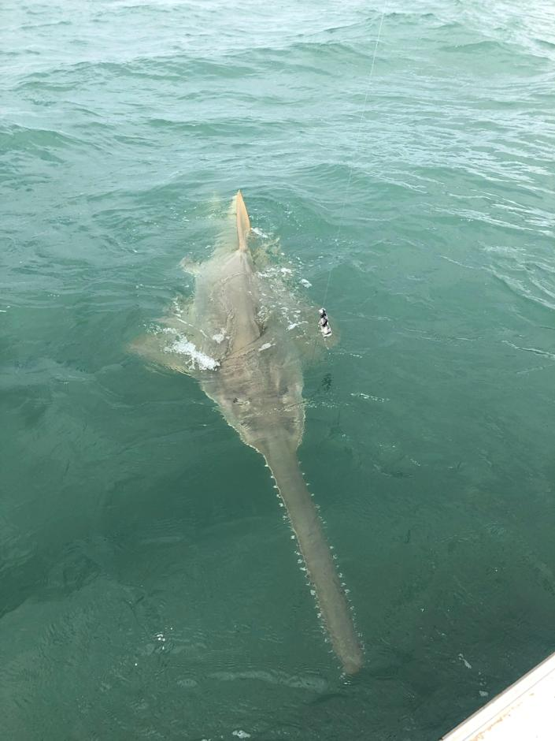

The Daily CollaboraIT
The Daily CollaboraIT
The Area's Best Coffee Spot
By Jane Wilson
Columnist at "The Daily CollaboraIT"
April 9th, 2022. 11:10pm EST

"Iced-Americano" from Zak's Coffee Shop in Tysons Corner Mall
So what "secret" does Virginia's highest net revenue mall ,estimated at 1 billion dollars 2013, have to offer. A simple answer, coffee. At "Zak's Coffee Shop". At this mid sized-family owned Afghan Coffee shop you find a variety of drinks, from North America and some blends and style from the Exotic Afghanistan. The taste, the smell, the aromatization you'll feel inside the store will last with you and your generations for 1000 life-lines. How often do you go to the mall and walk by this subtly "Wonder of the World"? When I first met Zak, he was a charismatic, friendly store owner. He immediately sat me down and brought me cake pops, drinks, a sandwich and anything else you can think of! All of his employees came to me and said hello as well. After meeting Zak and his employees I had to ask him "Why a coffee shop"? He answered, "He wanted to be different and not own a dealership but a coffee shop". From meeting Zak first hand he had a certain presence to him, it looked as if he was kind and warm hearted but cautious, understandable, he did not know he was gonna be interviewed in the middle of the day.
Other news
UK's Prime minister Boris Johnson meets President Zelensky for talks about situation in Ukraine.
April 09,2022. 11:33 pm EST
Mr Johnson's visit to Kyiv was not announced in advance and the first indication he was in the city came when a photograph of his meeting with President Zelensky was put on Twitter by the Ukrainian embassy in London. A Downing Street spokesman said: "The prime minister has travelled to Ukraine to meet President Zelensky in person, in a show of solidarity with the Ukrainian people."
seen here is Boris Johnson and Vladimer Zelensky
In a statement after the meeting, Mr Johnson paid tribute to "President Zelensky's resolute leadership and the invincible heroism and courage of the Ukrainian people", saying: "Ukraine has defied the odds and pushed back Russian forces from the gates of Kyiv". He said: "I made clear today that the United Kingdom stands unwaveringly with them in this ongoing fight, and we are in it for the long run. "We are stepping up our own military and economic support and convening a global alliance to bring this tragedy to an end, and ensure Ukraine survives and thrives as a free and sovereign nation."
Source: BBC.com
Youtube video source: MSNBC
Florida visitor from UK wanted to catch a shark. Instead he caught something amazing
April 10,2022. 4:39 pm EST
When Ian Atherton traveled across the pond from his home in Fleetwood, England to Florida's Space Coast for an April vacation, one of the things he had on his bucket list was to catch a shark. He had always envisioned what it would be like to tangle man-to-fish with one of the ocean's most fearsome apex predators. How's that saying go about best laid plans? Atherton was able to catch and release a giant seagoing fish, only it wasn't a shark, but a distant cousin and something much rarer — and some might say cooler — than a shark.

Pictured here is a saw-fish
The fish uses it in the wild by swinging it back and forth through a school of small baitfish. A whack from the saw will stun a small fish allowing the sawfish to pick it up from the bottom since it mouth is located on the underside of the large fish. They also eat crustaceans and other bottom dwelling organisms.
Source: Yahoo.News